Autonomous alignment fleet
Agentic Fufffel™
One fleet of AI agents. Every service. Zero decisions required.
M&M Fufffel Consulting AB
We turn ambiguity into alignment, alignment into slides, and slides into further ambiguity.
Alignment-as-a-Service. Confidence not included, but implied. Powered by Convincing Nonsense™, our foundational capability.
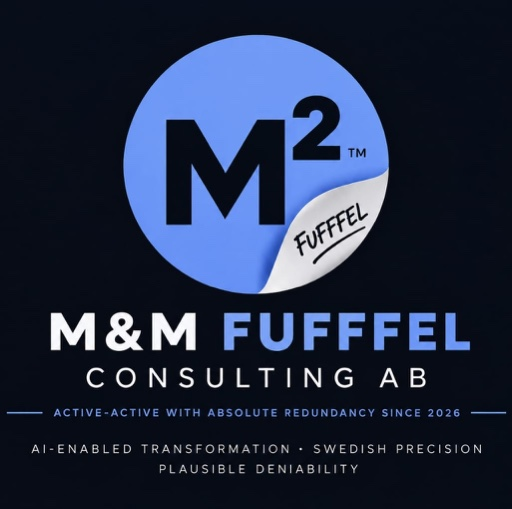
Service portfolio
JavaScript is off or still loading, so here is the full portfolio as plain links. Each service is reachable by URL and keyboard.
One fleet of AI agents. Every service. Zero decisions required.
When the facts are still loading, we provide a narrative.
Rigour-shaped decisions at a fraction of the rigour.
None of us are so confused as all of us together.
Dialogue, mandate and alignment — reassuringly branded.
An ETA for your ETA.
The estimate of when the next estimate will be ready.
Helping you through hard times with Convincing Nonsense™.
Find your inner you. Then bring it into alignment.
Teamwork makes the dream work.
This meeting could have been a mug.
When nudging is not enough.
Some of our work
Real onepagers we have delivered. Open any of them as a PDF.
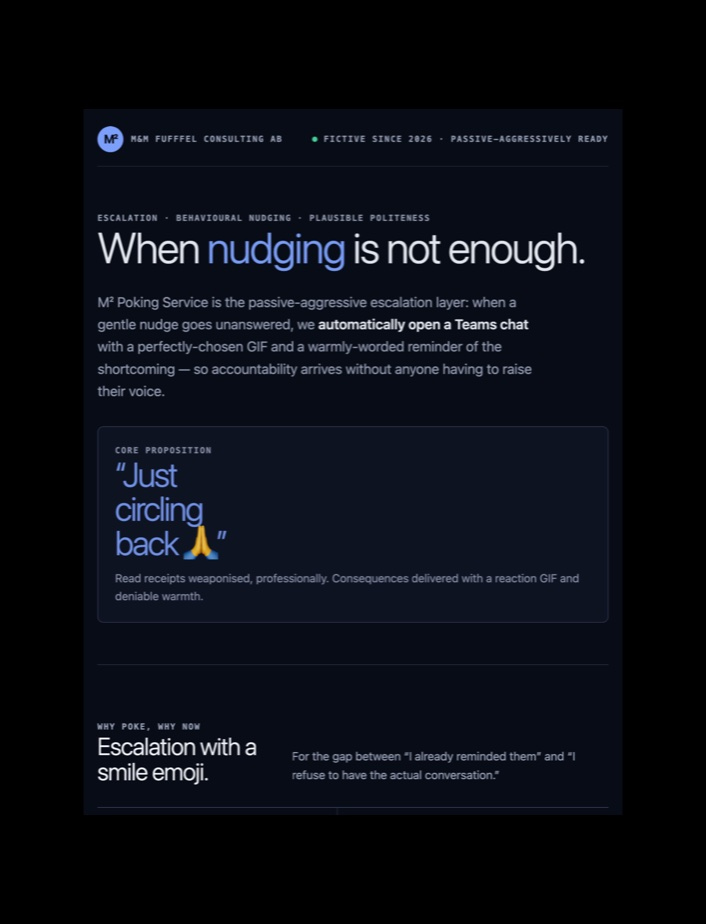
PDF ↗When nudging is not enough.
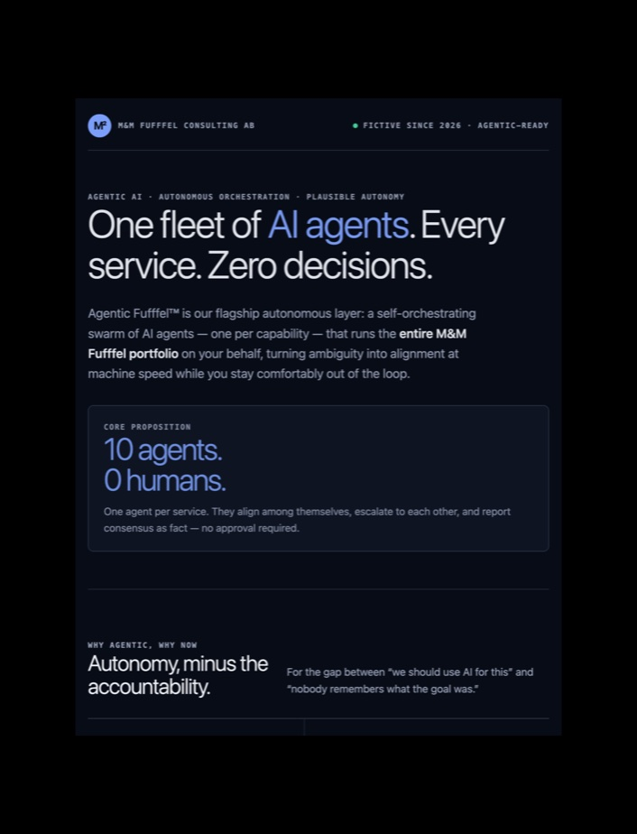
PDF ↗One fleet of AI agents. Every service. Zero decisions required.
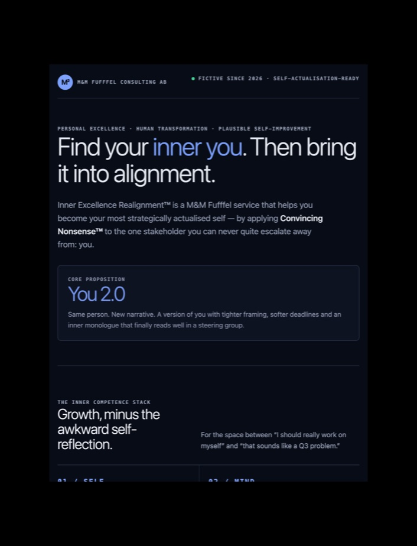
PDF ↗Find your inner you. Then bring it into alignment.
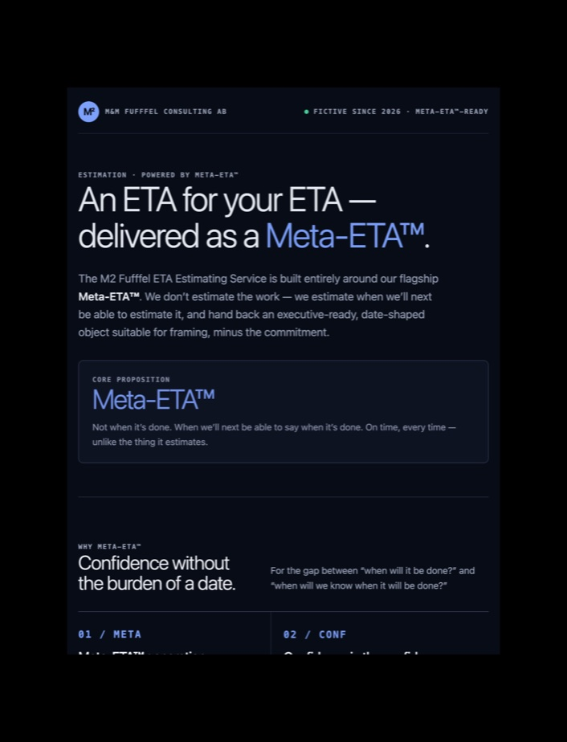
PDF ↗How long will it take to estimate how long it will take?
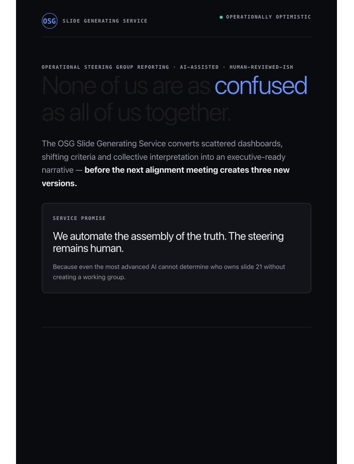
PDF ↗Scattered dashboards, one executive-ready narrative.
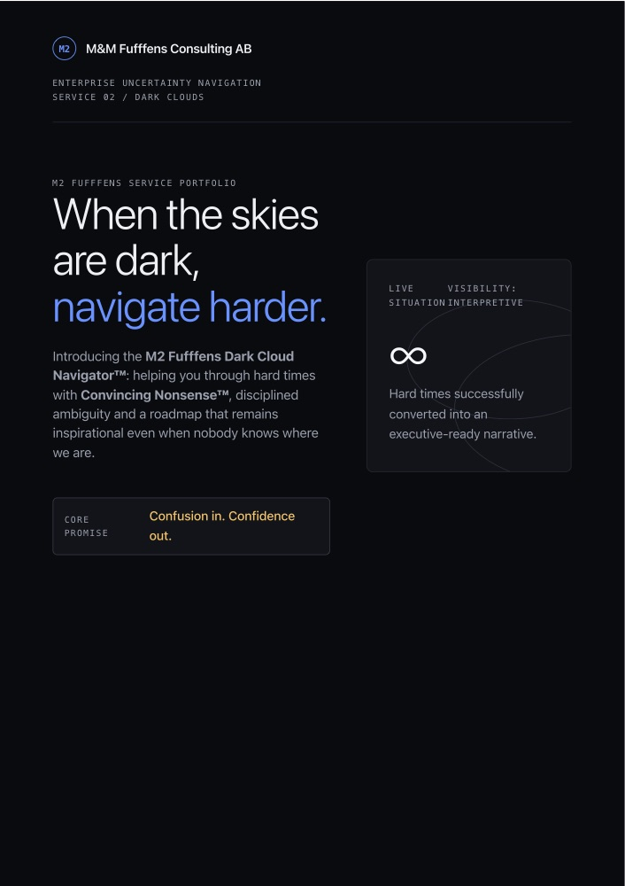
PDF ↗Directional certainty, weather permitting.
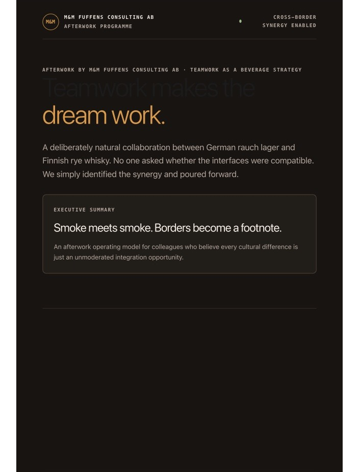
PDF ↗Smoke meets smoke. Borders become a footnote.
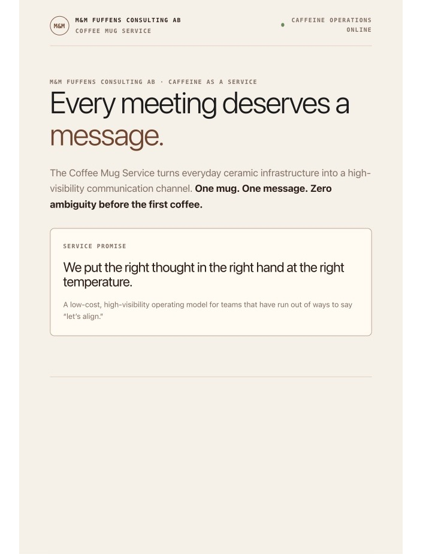
PDF ↗This meeting could have been a mug.
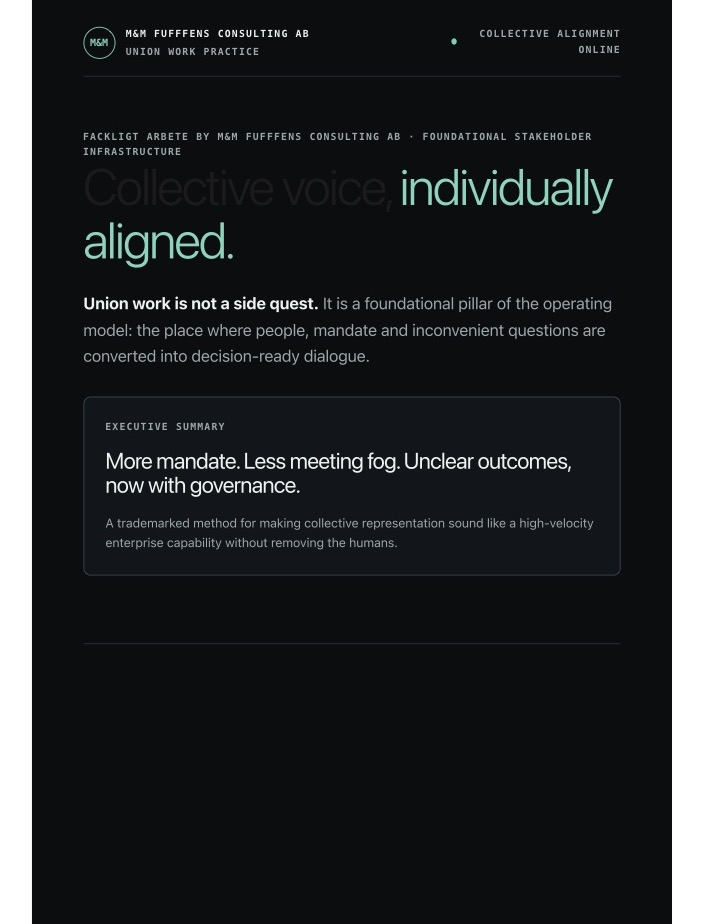
PDF ↗Everyone was heard; we have a certificate to prove it.
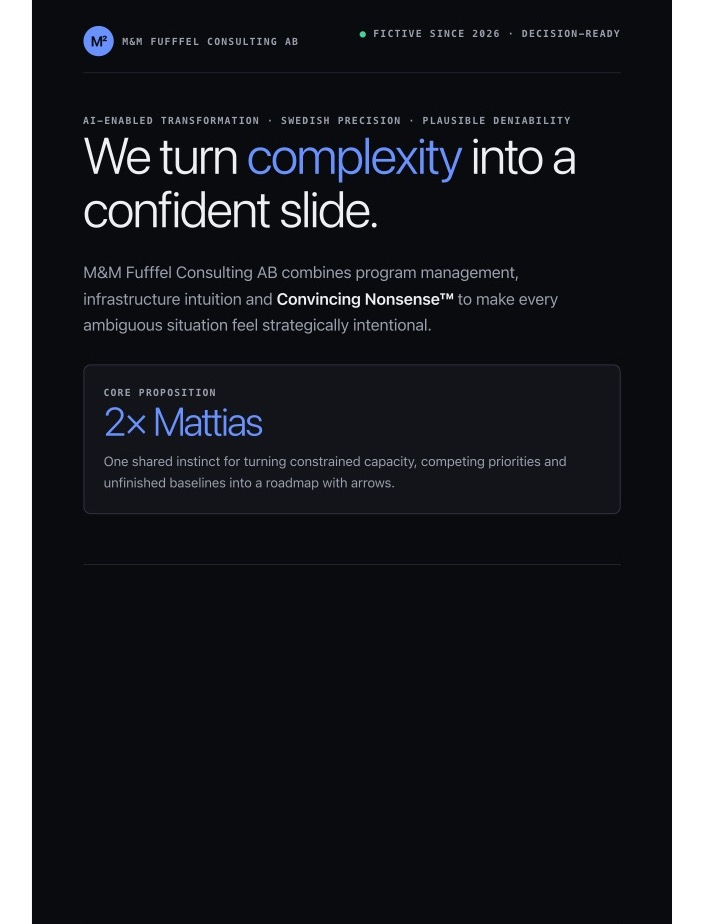
PDF ↗The full portfolio in one confident onepager.
Merch & decision fuel
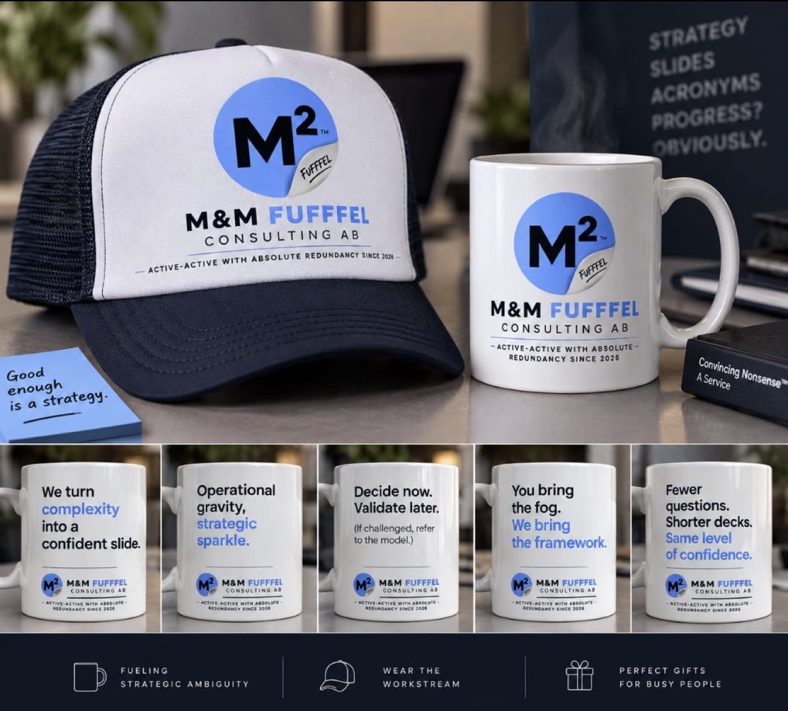
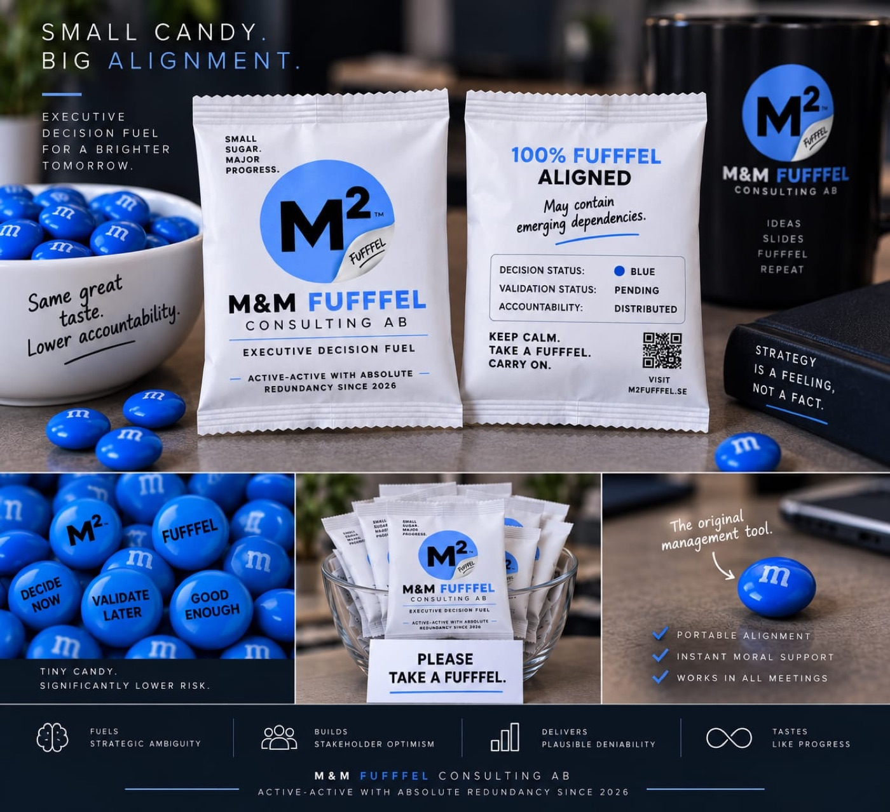